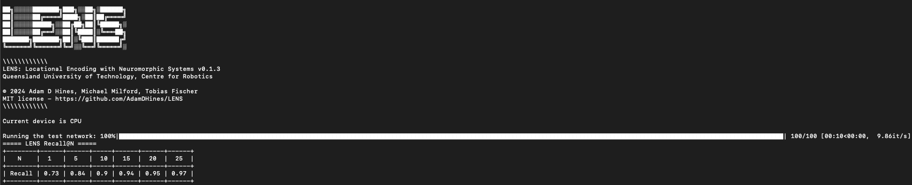
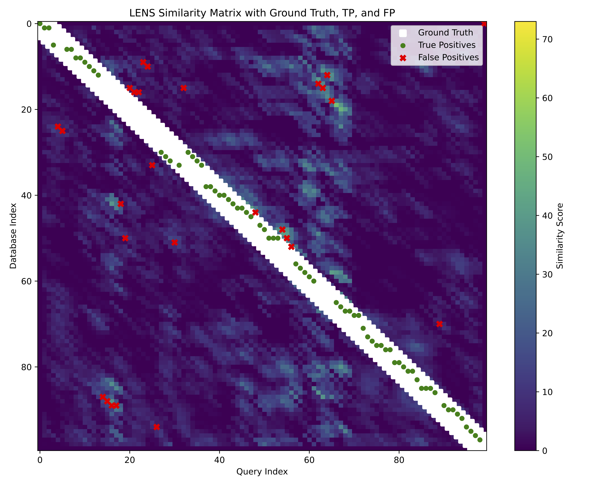
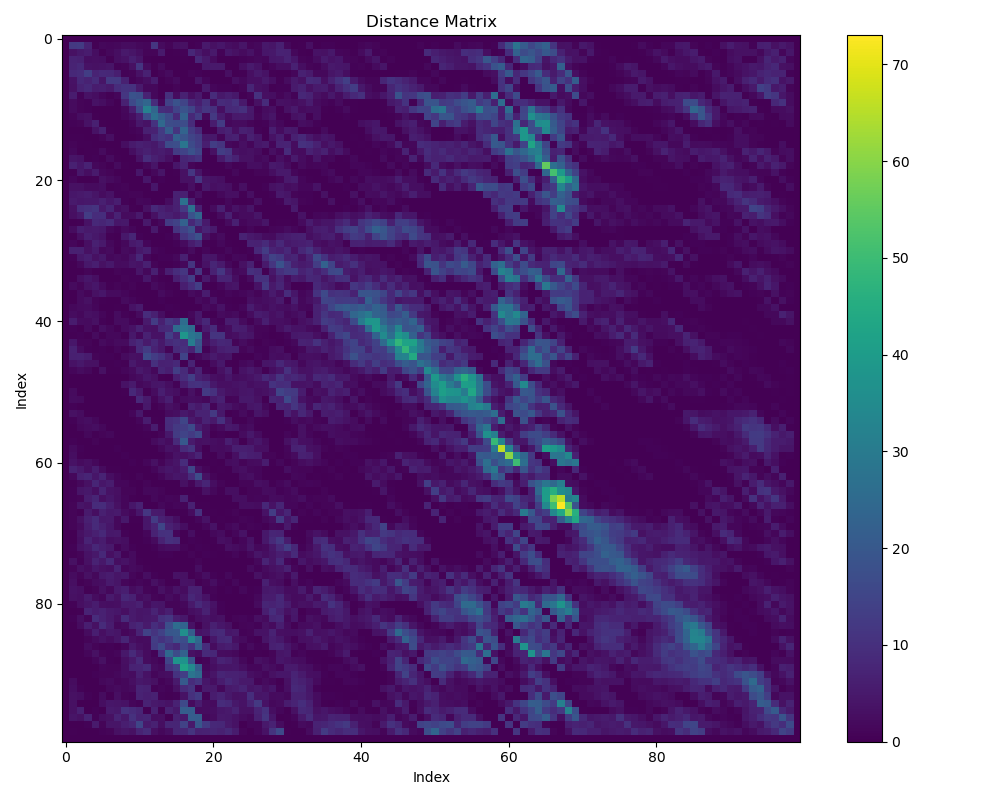

Evaluating Models
In this guide, we will explore the evaluation network and the different parameters available and analysis.
Note
This guide assumes you have already set up your dataset and have an appropriate ground truth file. See Model Training for more details.
Running the evaluation network
To run the training network, we simply need to run the following in the command terminal:
pixi run evaluate
This runs the default settings with the example dataset included in the project directory. However, if we wanted to see what this would like with a custom dataset we can add the arguments in manually:
pixi run evaluate --dataset example --camera davis128 --reference example-reference --reference_places 100 --query example-query --query_places 100
Similar to the training, we define the --dataset and --camera we want to use, but we also still need to pass in the --reference
and --reference_places information so that LENS knows which model to import.
Additionally, any specifications made to --dims, --roi_dim, and --feature_multiplier must be included to ensure the evaluation
runs.
Hint
If training and evaluating on your own dataset, you can change the defaults in main.py to simplify command terminal execution.
A Recall@K caluclation will run to quantify how well your network performed based on the ground truth file provided.
{kind=link}

This tells us we achieved a Recall@1 of 0.73, meaning when only allowing each query to match to a single reference we achieve 73% accuracy.
Ground truth tolerances
Our ground truth binary matrix assumes that every single query has a singular matching reference. This can be somewhat overly strict in terms of localization in real world scenarios.
We include a method for allowing a tolerance in the ground truth that is based on a fixed number of places:
pixi run evaluate --GT_tolerance 3
In the above, this will dilate the ground truth matrix to allow true positive matches to occur if the LENS network predicted a place that is + or - 3 places from the actual ground truth.
Hint
To enforce the strictest matching, set the --GT_tolerance to 0.
In our example dataset, if we set --GT_tolerance 0 we drastically reduce Recall@1 performance from 0.73 to 0.12.
Sequence matching
The length of the sequence matcher can be modified based on the distances between places in your images. Typically, but not always, a longer sequence length will enhance Recall@K performance whereas shorter lengths diminish accuracy.
In the case of LENS, especially in terms of the pixel selection methodology, sequence matching is required to achieve sufficient accuracy.
To modify the sequence length, we use the --sequence_length argument which will adjust how many places to highlight sequential information for:
pixi run evaluate --sequence_length 3
This will set the sequence length to be 3 places. If we compare Recall@1 performance when --sequence_length 0 is used, we see a drop from
0.73 to 0.55.
Important
Sequence length is a user choosable parameter that ultimately depends on the downstream application. It would be advisable in any work to run an ablation study on the effects of sequence length on performance. Longer sequence lengths can sometimes reverse performance gains.
Results output & saving
The results from running the LENS evaluation are automatically stored in the ./lens/output/ folder. The type of results that are stored depend
on the evaluations run.
Each time the LENS evaluation is run, a unique folder that is date and timestamped is generated to avoid overwriting information.
Standard outputs from LENS are a .log file consisting of the command terminal output, a .png image of the similarity and
ground truth matrices, as well as a high quality .pdf of the similarity matrix showing the ground truth and corresponding matches.
{kind=link}

Additional evaluations
Additional evaluations are all stored in the same output folder described above.
Visualize similarity matrix
We can see the matrix of output spikes from LENS directly to observe visually how the model performed:
pixi run evaluate --sim_mat
{kind=link}

The colorbar represents the number of output spikes from the LENS model, higher spikes indicate highler similarity between query and reference, and vice versa.
Precision-Recall curve
We can also output a Precision-Recall curve into a .json file by using the --pr_curve argument:
pixi run evaluate --PR_curve
Sum of absolute differences
We can also compare to a baseline method built in to LENS, the sum-of-absolute-differences, to see how well it relatively performs:
pixi run evaluate --sad